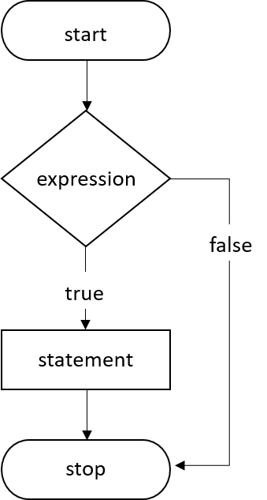

<!-- Page content-->
<div class="container mt-5">
    <div class="row">
        <div class="col">
            <!-- Post content-->
            <article>
                <!-- Post header-->

                <!-- Post content-->

                <section class="mb-5">

                    <p class="fs-5 mb-4">If statements in C is used to control the program flow based on some condition, it's used to execute some statement code block if the expression is evaluated to true. Otherwise, it will get skipped. This is the simplest way to modify the control flow of the program.</p>
                    <p class="fs-5 mb-4">The if statement in C can be used in various forms depending on the situation and complexity.</p>
                    
                    <div class="card">
                        <div class="card-header">There are four different types of if statement in C. These are:</div>
                        <div class="card-body">
                            <ul>
                                <li>Simple if Statement</li>
                                <li>if-else Statement</li>
                                <li>Nested if-else Statement</li>
                                <li>else-if Ladder</li>
                            </ul>
                        </div>
                    </div>

                    <p class="fs-5 mb-4"><u>The basic format of if statement is:</u></p>
                    <div class="card">
                        <div class="card-body">
                            <div class="outputTitle">Example:</div>
                            <script src="https://gist.github.com/ryy-clavo-317/0daa702fa7f9ea77eb2f8d54583b320a.js"></script>
                        </div>
                    </div>

                    <p class="fs-5 mb-4">'Statement n' can be a statement or a set of statements, and if the test expression is evaluated to <span class="highlight">true</span>, the statement block will get executed, or it will get skipped.</p>
                    <p class="fs-5 mb-4"><u>Figure - Flowchart of if Statement:</u></p>
                    

                    <h5 class="fw-bolder mb-4 mt-5">Example of a C Program to Demonstrate if Statement</h5>
                    <div class="card">
                        <div class="card-body">
                            <div class="outputTitle">Example:</div>
                            <script src="https://gist.github.com/ryy-clavo-317/93b595d4d880227087de226899651709.js"></script>
                            <div class="outputTitle">Program Output:</div>
                            <div class="output">
                                <p>b is greater </p>
                            </div>

                            <div class="outputTitle">Example:</div>
                            <script src="https://gist.github.com/ryy-clavo-317/f59e175fbac4af2140dd77201c80c53f.js"></script>
                            <div class="outputTitle">Program Output:</div>
                            <div class="output">
                                <p>
                                    Type a number: -2 <br>
                                    The aboslute value is 2
                                </p>
                            </div>
                        </div>
                    </div>
                    
                </section>
            </article>
        </div>
    </div>
</div>